CM Webex backup guide
A quick explanation on how to backup webex, with pictures. There are two versions: an easy one-click version (which crucially does not require Python) and a Python script, which allows you to change some options yourself.
The first step is always the same:
0. Generate a PAT
First, you’ll need to create a personal identification token. This is a way to tell the webex servers that yes, it’s actually you, without giving out your password or anything. Go to the webex developer site, log in at the top right, and scroll down slightly to see a box containing your personal access token (but hidden):
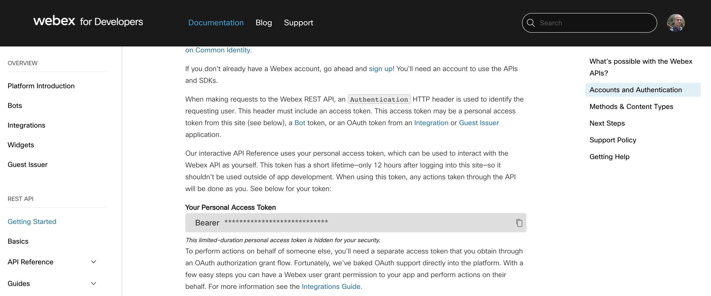
Each token is valid for only 12 hours, so if you would like to backup again at some point after those 12 hours, you’ll have to generate a new token. To make sure you don’t lose it, you could quickly paste it in your notes or something, but you can always generate a new one if needed.
From here, follow the steps for Macs, for Windows, or using the Python script.
One-click route for Macs
Mac - 1 Get everything in place
To run the one-click route, download and unpack the executable webex-archive from here. I recommend putting it in a separate folder, as all the backup files will be created at the same location as the program.
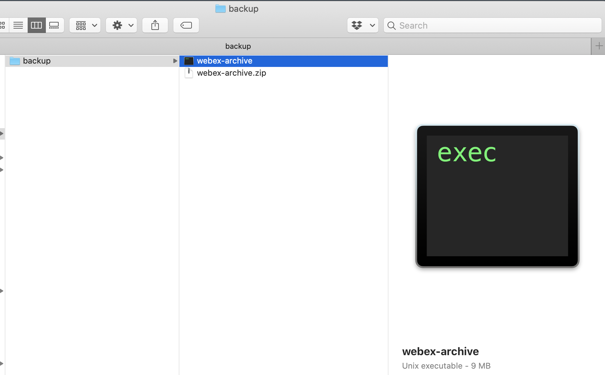
If the file looks like the picture below, or otherwise does not look like an executable or activate when you open it, check the step at the end of the Mac route to fix this!
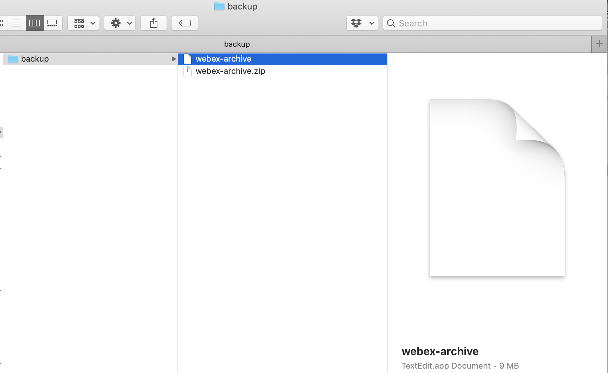
Mac - 2 Run the program
Right-click webex-archive and click open. It will open a terminal screen, which takes a few seconds to get going past the first lines:
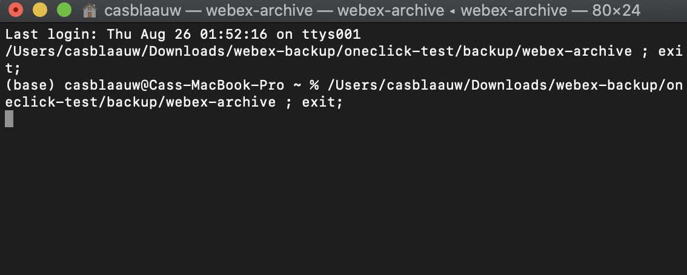
But soon enough, it should prompt you for your PAT:
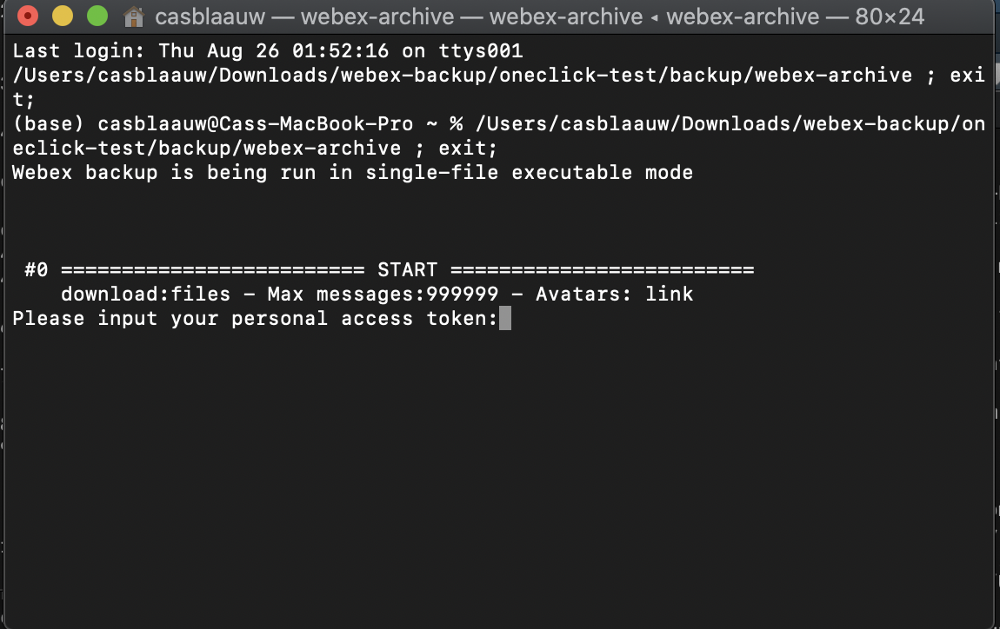
Paste your PAT in there and press enter. After this, it will ask whether you want to backup one-on-one conversations, group chats, or both. I would recommend both, just to be sure, although technically only one-on-one chats should be lost by the migration. Select your mode, press enter, and the backup should be on the way!
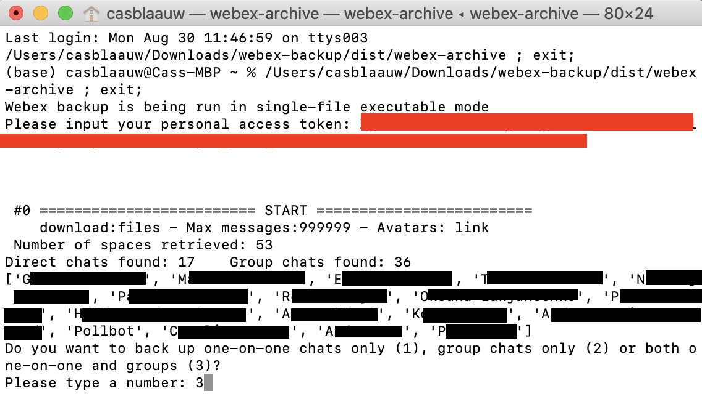
Mac - 3 Look at your results
That’s it! You should see a bunch of folders, one for each private contact. Just doubleclick the .html file to see the messages of that chat.
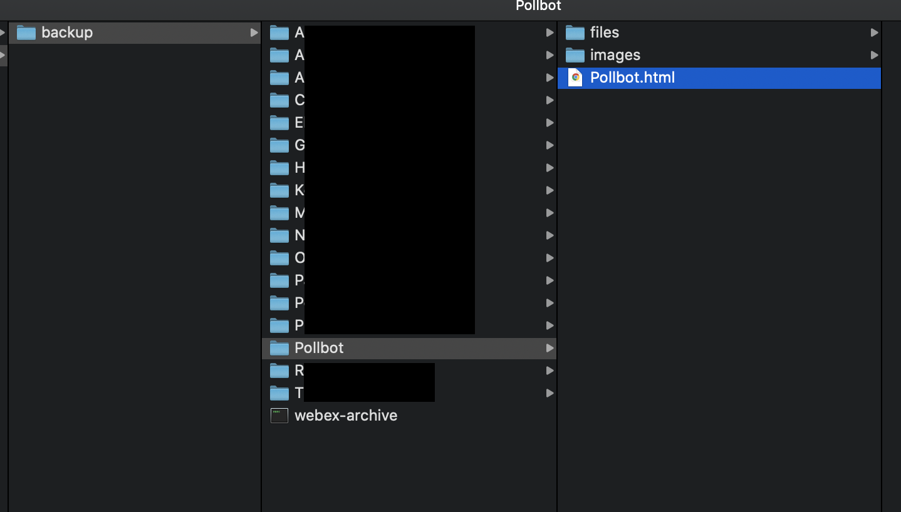
Mac - Making the program executable
If you cannot open the file to start it on your machine, or if it’s not recognised as a program, the file’s permissions (an internal mac OS X system) might be limiting it. This is easily fixable:
First, rightclick the folder that your file is in and select New Terminal at Folder:
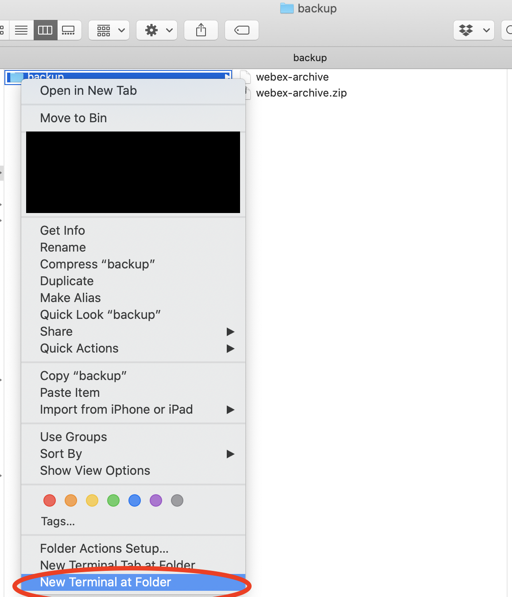
In the terminal window that pops up, write chmod +x webex-archive and press enter:
(Remember that it’s a +, not a - like most command line arguments would have!)
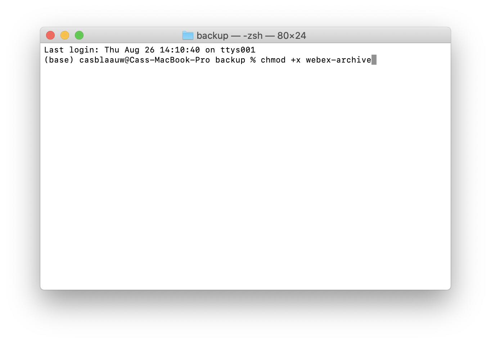
Now check your file again. It should now look like an executable, and work if you open it:
Now, you can go back to step 2. It should be smooth sailing from here on out!
One-click route for Windows
Windows - 1 Get everything in place
To run the one-click route, download and unpack the executable webex-archive.exe from here. I recommend putting it in a separate folder, as all the backup files will be created at the same location as the program.
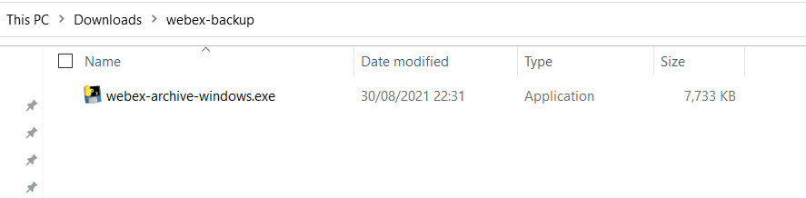
Windows - 2 Run the program
Right-click webex-archive.exe and click open. You might get a popup by Windows SmartScreen, like this:

In that case, click ‘More info’, which should make a ‘Run anyway’ button appear.
Once it’s running, it will open a terminal screen, which might take a few seconds to get going.
Soon enough, though, it should prompt you for your PAT:
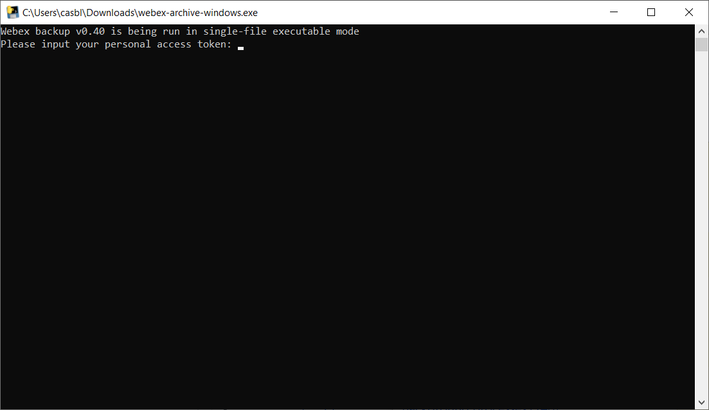
Paste your PAT in there and press enter. After this, it will ask whether you want to backup one-on-one conversations, group chats, or both. I would recommend both, just to be sure, although technically only one-on-one chats should be lost by the migration. It will also ask if you want to download just pictures or all files. Depending on your messaging habits, all files can take quite a bit longer, but it does lead to a more complete backup.
If your screen closes suddenly and unexpectedly, you might be running into an error. Follow the step at the end of the Windows route to see how you can see what is going wrong.
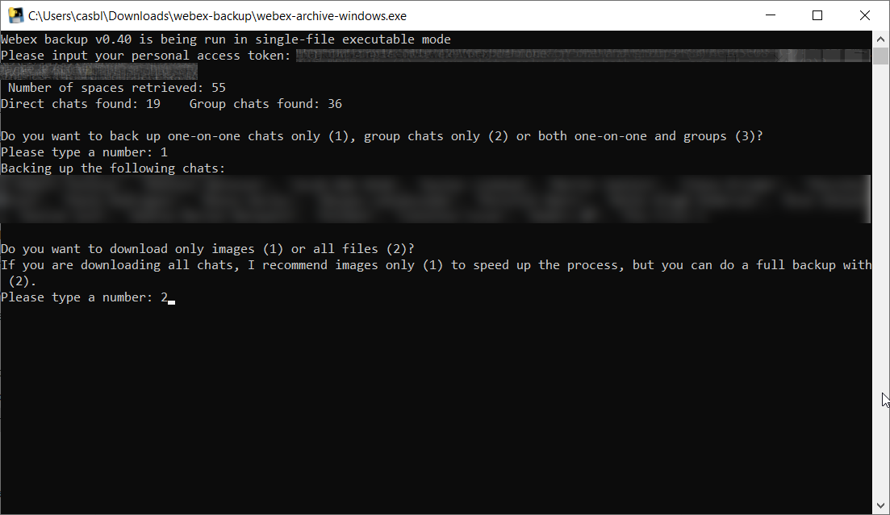
Windows - 3 Look at your results
That’s it! You should see a bunch of folders, one for each private contact. Just doubleclick the .html file in the folder to see the messages of that chat.
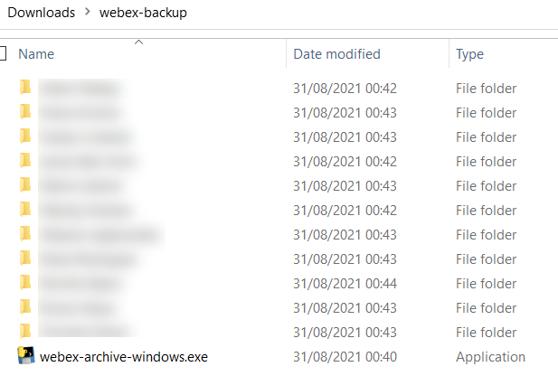
Windows - program closing unexpectedly
Due to the way Windows is, the entire program window instantly closes when the program runs into an error and stops. This is nice normally, but obviously makes it hard to see what the actual error is.
If you want to debug the program and see what could be going wrong, the key is to open it in a terminal-ish environment, like the command prompt or Windows PowerShell. An easy way to do this is as follows:
In the folder with webex-archive-windows.exe, click File at the top of the screen and select Open Windows PowerShell.
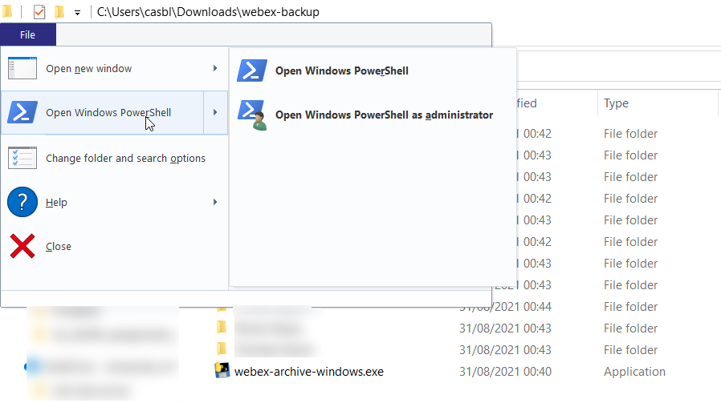
Then run the program from there by typing .\webex-archive-windows.exe (or start typing ‘webex’ and press tab, it should autofinish). Now, you have the time to look at the error.
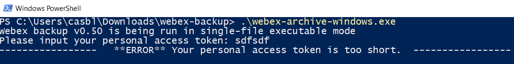
Python script route
Python - 1 Get everything in place
Download the script, webex-archive.py. I’d recommend putting it in its own folder, as all the backup files will end up in the same place. Once you’ve got everything in place, right-click the folder that the script is in (not the file itself), and click New Terminal at Folder (or just navigate to the folder in your terminal of choice).
That should look like this:
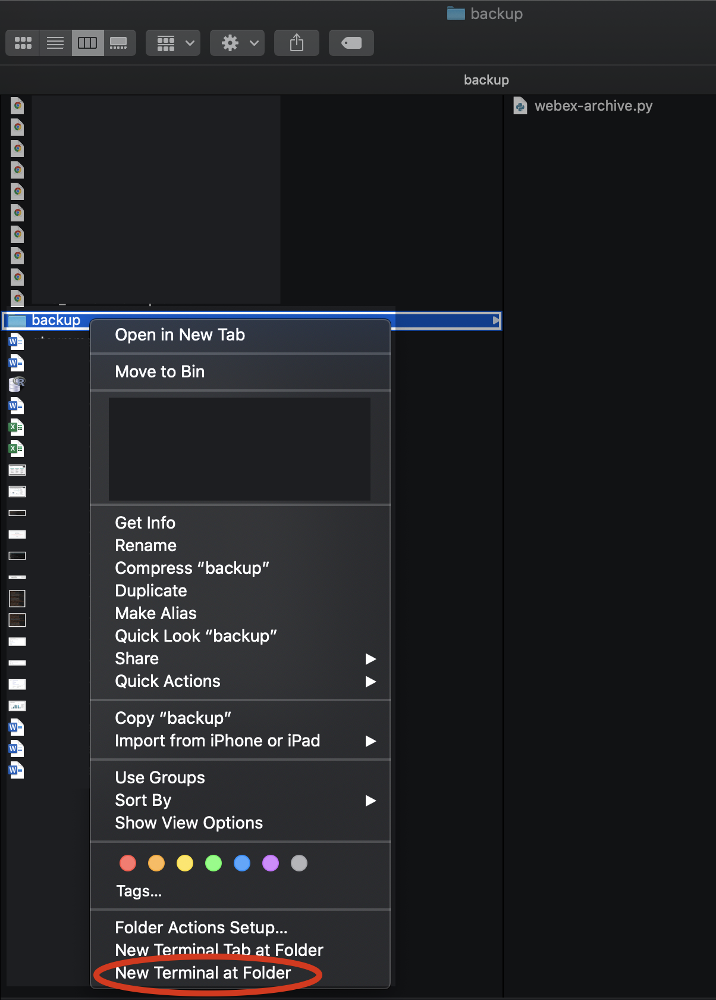
Python - 2 Run the script
A terminal window should pop up, looking something like the screenshot below. In that window, type python3 webex-archive.py [YOUR_PERSONAL_ACCESS_TOKEN_HERE], like this:
(I wrote python and that worked for me, you might need python3.)
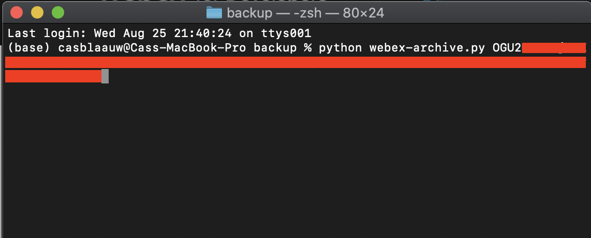
Then press enter and you’re good to go! It should start backing up your one-on-one chats instantly and reporting its progress along the way.
Python - 3 Results
Hopefully, everything went okay and you now have a bunch of backups! The files are backed up into individual folders, with the .html file containing the actual messages inside the folder. Simply doubleclick the .html file to see your message history!
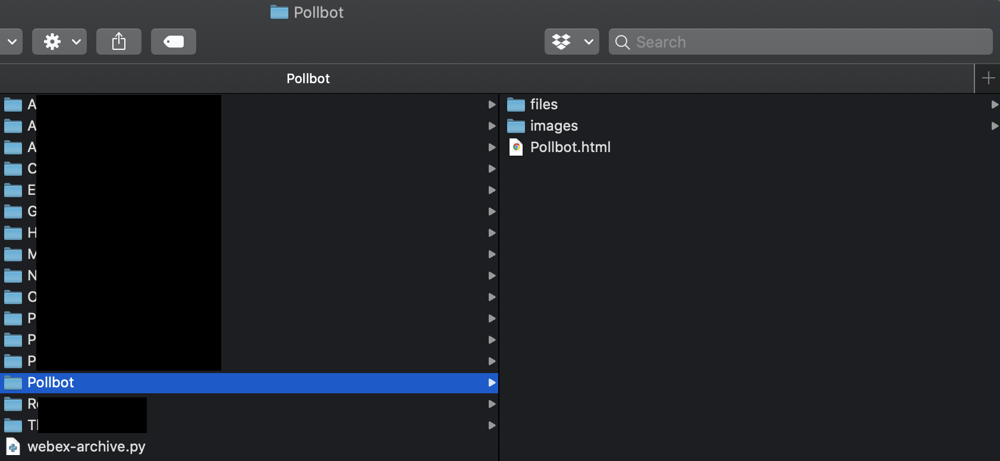
Python - 4 Optional: configs
The script should work right out of the box with no problems, backing up everything.
There are some things that can be configured based on personal preference, though, in the configurations section at the top of the script.
The most crucial is probably the option to swap around the message order so that it goes from new to old rather than old to new (the default). Other options mostly restrict the scope of the backup, if things take a long time or lots of disk space.
The options are clearly described in the script, but I’ll quickly recap here:
- Attachments: download both files and images, only images, or no attachments?
Default is 'files', which was fine for me, but my webex history is only ~1 year old. Moving to images does speed things up quite a lot already.
- Sorting: Show messages from old to new (so new at the bottom) or new to old (so new at the top)?
Default is old-to-new (False). I haven’t tested new-to-old, but it should work?
- Max messages: Maximum number of messages per chat to back up, either in amount or in days.
Default is very high (999999), intended to backup everything. It’s possible (but untested) to set a date limit, i.e. ‘60d’. Remember to pass a string instead of an integer in that case.
- Avatars: Download, link, or drop avatars?
Default is linking to the avatars, which retrieves them from webex online.
- Other outputs: You can optionally also get the chats as a txt and/or json file, alongside the html that’s always made.
Only creates html by default, should be enough (and is still grep-able, if needed).